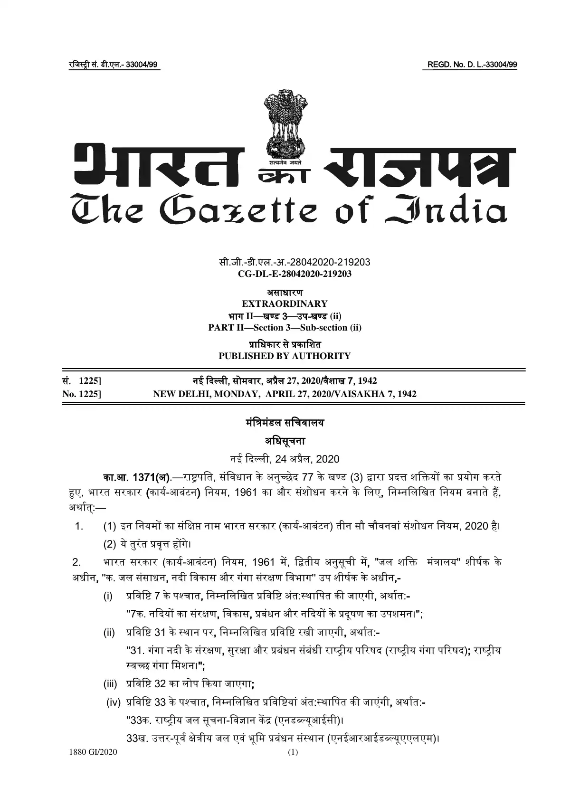
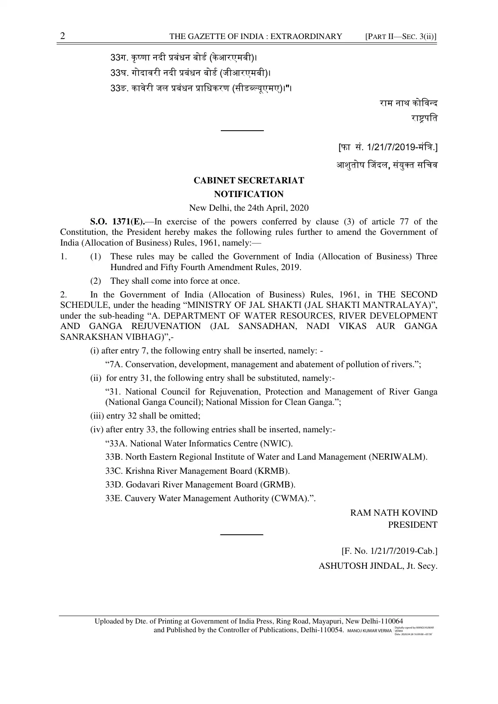

Amendment #354 (S.O. 1371(E), 2020)
4 changes: 0 to the First Schedule, 4 to the Second Schedule. 4 applied
The order, page by page
Page 1 of 2

Page 2 of 2

1234after Schedule 2 › MINISTRY OF JAL SHAKTI › DEPARTMENT OF WATER RESOURCES, RIVER DEVELOPMENT AND GANGA REJUVENATION › entry 7
- 7A. Conservation, development, management and abatement of pollution of rivers.
applied at schedule 2 › ministry MINISTRY OF JAL SHAKTI › department A › group_heading I › entry 7A in the Rules after #354
Schedule 2 › MINISTRY OF JAL SHAKTI › DEPARTMENT OF WATER RESOURCES, RIVER DEVELOPMENT AND GANGA REJUVENATION › entry 31
- 31. National Council for Rejuvenation, Protection and Management of River Ganga (National Ganga Council); National Mission for Clean Ganga.
applied at schedule 2 › ministry MINISTRY OF JAL SHAKTI › department A › group_heading III › entry 31 in the Rules after #354
Schedule 2 › MINISTRY OF JAL SHAKTI › DEPARTMENT OF WATER RESOURCES, RIVER DEVELOPMENT AND GANGA REJUVENATION › entry 32
applied at schedule 2 › ministry MINISTRY OF JAL SHAKTI › department A › group_heading III › entry 32 in the Rules after #354
after Schedule 2 › MINISTRY OF JAL SHAKTI › DEPARTMENT OF WATER RESOURCES, RIVER DEVELOPMENT AND GANGA REJUVENATION › entry 33
- 33A. National Water Informatics Centre (NWIC).
- 33B. North Eastern Regional Institute of Water and Land Management (NERIWALM).
- 33C. Krishna River Management Board (KRMB).
- 33D. Godavari River Management Board (GRMB).
- 33E. Cauvery Water Management Authority (CWMA).
applied at schedule 2 › ministry MINISTRY OF JAL SHAKTI › department A › group_heading III › entry 33A in the Rules after #354
How this document was read
From the Government of India (Allocation of Business) Rules, 1961 and their amendments, as published by the Cabinet Secretariat (cabsec.gov.in), read by orgpedia. The readings of the older scanned gazettes have known gaps.